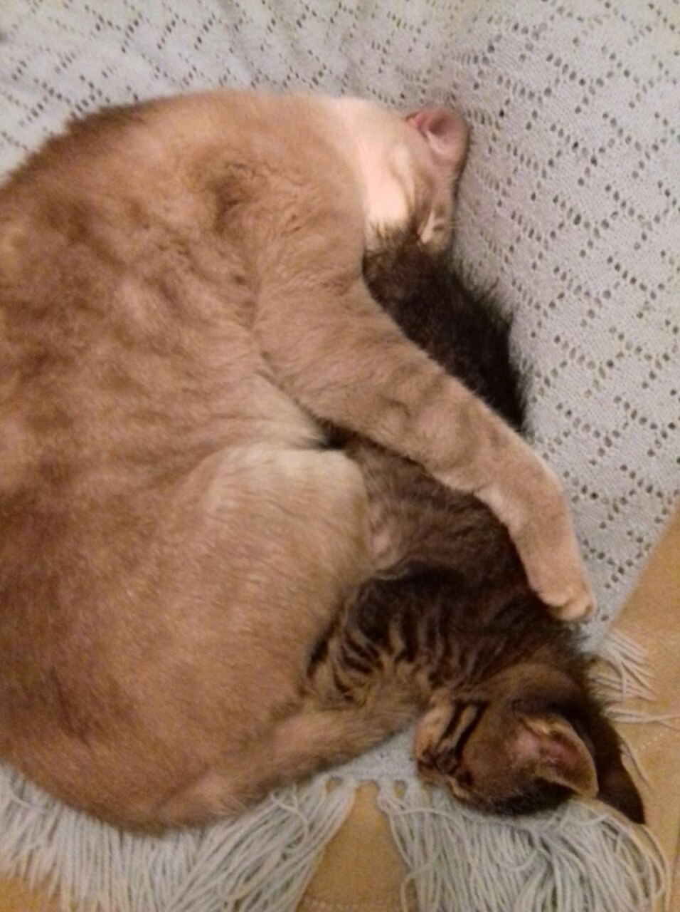
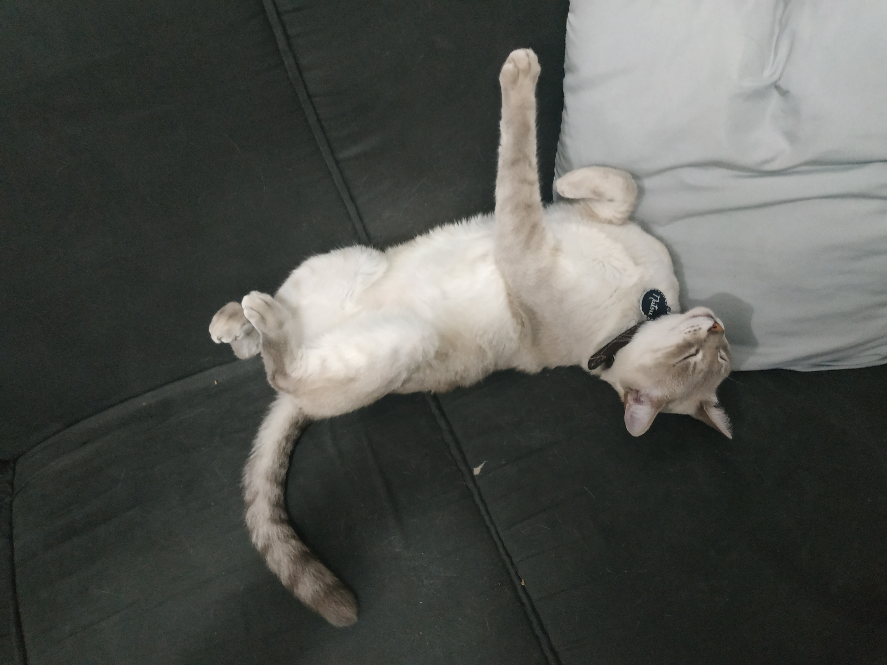

Trabalhos do Arthur Luis Kroenke
Meu gato Natsu


Meu gato Natsu, branco de olhos azuis. Uma curiosidade sobre gatos de olhos azuis é que 72% deles são surdos, mas Natsu não é surdo :).
Saiba mais sobre gatosFeito na nossa primeira aula 24/02/2025